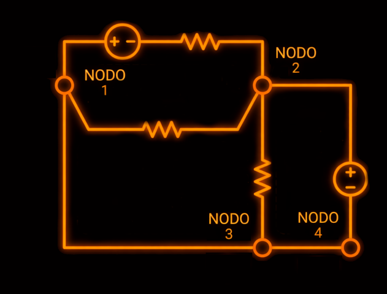
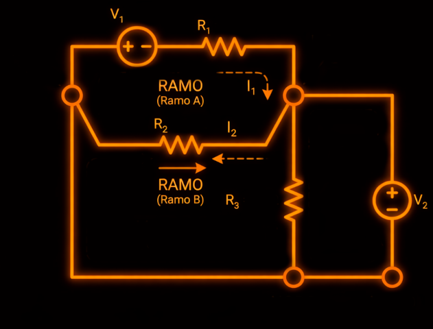
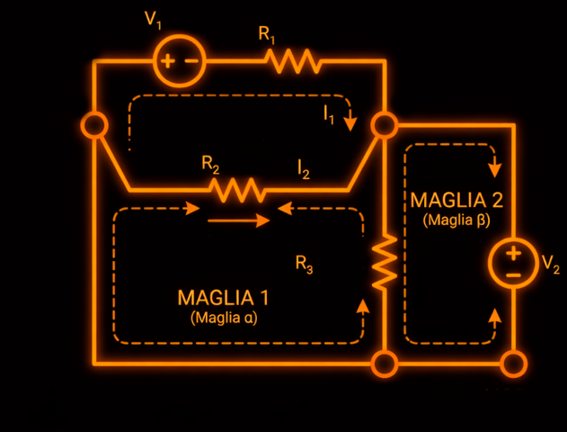
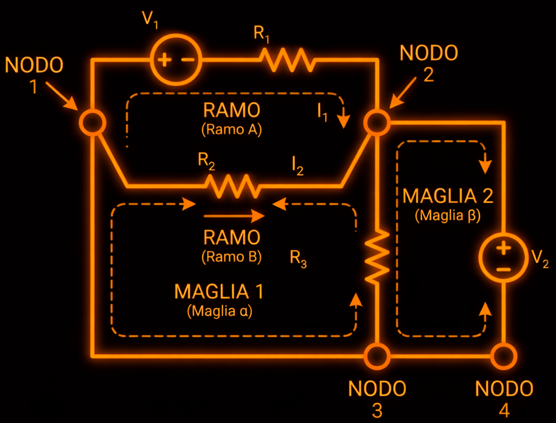

Reti elettriche regime continuo
26 ore - Elettrotecnica e leggi di Kirchhoff.
Circuiti logici combinatori
15 ore - Algebra di Boole e porte logiche.
Sistemi di telecomunicazione
10 ore - Fondamenti di trasmissione.
Onde elettromagnetiche e antenne
15 ore - Propagazione e irradiazione.
Reti elettriche in regime continuo
Elettrotecnica di base e leggi di Kirchhoff applicate alle telecomunicazioni.
Nel contesto delle telecomunicazioni, lo studio delle reti in regime continuo (DC) costituisce il fondamento propedeutico per comprendere l'alimentazione dei circuiti elettronici, lo sfasamento dei segnali e il comportamento delle linee di trasmissione. L'analisi circuitale permette di determinare come la corrente e la tensione si distribuiscono all'interno di reti complesse prima di affrontare lo studio dei segnali in corrente alternata.
1. Il Regime Continuo e i Parametri Circuitale
Il regime continuo identifica un sistema in cui la corrente fluisce in un unico verso e mantiene un'intensità costante nel tempo. I tre parametri fondamentali che governano qualsiasi circuito di telecomunicazioni sono:
La Tensione elettrica (V), che rappresenta l'energia per unità di carica fornita dai generatori; la Corrente elettrica (I), ovvero il flusso ordinato di elettroni nel tempo; e la Resistenza (R), che quantifica l'opposizione dei materiali e dei componenti al passaggio della corrente.
2. Legge di Ohm ed Effetto Joule nelle Linee
La relazione fondamentale tra le grandezze è espressa dalla Prima Legge di Ohm: V = R · I. In ingegneria delle telecomunicazioni, questa legge è essenziale per calcolare i cali di tensione lungo i cavi di trasmissione.
Il passaggio di corrente genera inevitabilmente una perdita di energia sotto forma di calore, nota come Effetto Joule. Questo fenomeno è responsabile dell'attenuazione termica nei conduttori e viene calcolato con la formula della potenza dissipata:
3. Elementi Topologici dei Circuiti
Per applicare i metodi di risoluzione, la rete elettrica viene scomposta in tre elementi geometrici chiave, analogamente alle strutture logiche dei flussi di informazione:
-

Nodo: Punto del circuito in cui si connettono tre o più conduttori. Funge da vero e proprio "bivio" in cui la corrente si divide. -

Ramo: Il tratto di circuito compreso tra due nodi consecutivi. Tutti i componenti disposti sul medesimo ramo condividono la stessa corrente. -

Maglia: Un percorso chiuso ideale che parte da un nodo e ritorna al punto di partenza senza incrociare due volte lo stesso nodo intermedio.
4. Analisi Comparativa delle Connessioni Resistive
I componenti passivi (resistori) possono essere combinati per sintetizzare una singola Resistenza Equivalente (Req) in grado di semplificare il calcolo dei circuiti di carico:
| Parametro Analitico | Configurazione in Serie | Configurazione in Parallelo |
|---|---|---|
| Allineamento Topologico | I componenti sono disposti uno di seguito all'altro sullo stesso ramo. | I componenti sono collegati direttamente alla stessa coppia di nodi. |
| Ripartizione Corrente | Itot = I1 = I2 | La corrente si divide nei rami in modo inversamente proporzionale. |
| Ripartizione Tensione | La tensione si divide proporzionalmente al valore di R. | Vtot = V1 = V2 |
| Equazione Risolutiva | Req = R1 + R2 + R3 + … | 1/Req = 1/R1 + 1/R2 + 1/R3 + … |
| Formula Rapida (2R) | Si applica la somma lineare diretta. | Req = (R1 · R2) / (R1 + R2) |
5. Analisi di Rete tramite le Leggi di Kirchhoff
Quando i circuiti presentano maglie multiple interconnesse, si ricorre ai due principi fondamentali di Kirchhoff:
-
Legge di Kirchhoff delle Correnti (LKC / Nodi):
Basata sulla conservazione della carica. La somma algebrica delle correnti
che convergono in un nodo è pari a zero. Le correnti entranti equivalgono esattamente
alle correnti uscenti:
Σ Ientranti = Σ Iuscenti -
Legge di Kirchhoff delle Tensioni (LKM / Maglie):
Basata sulla conservazione dell'energia. La somma algebrica delle differenze
di potenziale lungo i rami di una maglia percorsa in un verso stabilito è uguale a zero:
Σ V = 0


Circuiti logici combinatori
Algebra di Boole e porte logiche.
Topic 1.0

Topic 2.0
Topic 3.0
Topic 4.0
Sistemi di telecomunicazione
Fondamenti di trasmissione.
Topic 1.0
Topic 2.0
Topic 3.0
Topic 4.0
Onde elettromagnetiche e antenne
Propagazione e irradiazione.
Topic 1.0
Topic 2.0
Topic 3.0
Topic 4.0